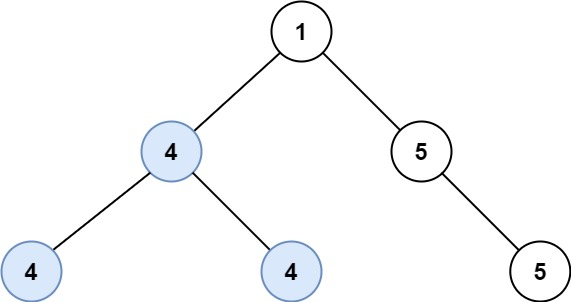

687. 最长同值路径
后序遍历：每个结点向上交一条同值链（只能延一边）；经过它拐弯的路径 = 左链 + 右链，取最大。
思路
arrow(node)返回从node出发一路向下的同值链长，给父结点接续用。- 孩子值和自己不同，那边的链按 0 算；相同则
孩子的链 + 1接上。 - 拐弯路径只在当前结点统计一次：
best = max(best, 左链 + 右链)。 - 向父结点只能交
max(左链, 右链)一条链——往上延伸不许分叉。
图解
最优解
1class Solution {2 private int best;3 4 public int longestUnivaluePath(TreeNode root) {5 best = 0;6 arrow(root);7 return best;8 }9 10 // 返回从 node 出发一路向下、值全相同的链长（相当于一支向下的箭）11 private int arrow(TreeNode node) {12 if (node == null) return 0;13 int left = arrow(node.left);14 int right = arrow(node.right);15 // 孩子的值和自己不同，那边的链就断掉，长度按 0 算16 int l = node.left != null && node.left.val == node.val ? left + 1 : 0;17 int r = node.right != null && node.right.val == node.val ? right + 1 : 0;18 best = Math.max(best, l + r); // 经过 node 拐弯的路径：左链 + 右链19 return Math.max(l, r); // 往父结点只能延伸一边，不能分叉20 }21}题目
给定一个二叉树的 root ，返回 最长的路径的长度 ，这个路径中的 每个节点具有相同值 。 这条路径可以经过也可以不经过根节点。
两个节点之间的路径长度 由它们之间的边数表示。
示例 1:

输入：root = [5,4,5,1,1,5] 输出：2
示例 2:

输入：root = [1,4,5,4,4,5] 输出：2
提示:
- 树的节点数的范围是
[0, 104] -1000 <= Node.val <= 1000- 树的深度将不超过
1000
题面取自力扣当前版本。
数据快照 2026-11-04。题面版权归力扣所有，本站点仅供本人学习使用，请勿对外发布。